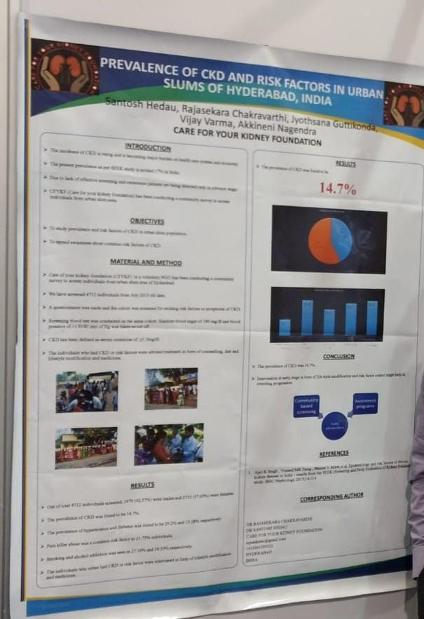

Our screening camps double as one of India's few community-level CKD prevalence datasets. This page collects our published research, area-wise survey findings and prevalence data from 2015 through 2026.

Named authors: Hedau, Chakravarthi, Guttikonda, Varma, Nagendra — Care for Your Kidney Foundation.
Method: A community survey screened individuals from an urban slum area, using a questionnaire to identify existing risk factors or symptoms of CKD, followed by a screening blood test on the same cohort. Random blood sugar of 300 mg/dl and blood pressure above 130/80 mmHg were taken as cut-offs; CKD was defined as serum creatinine greater than 1.1 mg/dl.
Results: CKD prevalence was found to be 13.87%, with hypertension at 29.2% and diabetes at 9.64%.
Conclusion: This is broadly consistent with the ~17.2% CKD prevalence reported nationally by the SEEK study. Primary care physicians treating hypertensive and diabetic patients should screen for early kidney damage — early intervention to control risk factors may retard disease progression.
Findings from CFYKF's urban slum screening program across three Hyderabad localities — the foundation's core published dataset.
| Area | Screened | Male | Female | Diabetes | Hypertension | CKD | Alcoholic | Smokers | HBG<12GM/DL | Anaemia |
|---|---|---|---|---|---|---|---|---|---|---|
| Rasoolpura | 755 | 249 | 406 | 75 | 161 | 66 | 136 | 160 | 184 | 22 |
| Dawoodkhanis land | 605 | 236 | 407 | 51 | 200 | 140 | 262 | 252 | 168 | 33 |
| Malkajgiri | 423 | 201 | 222 | 70 | 243 | 77 | 165 | 67 | 60 | 24 |
| Total | 10,026 | 3,403 | 4,545 | 861 | 1,247 | 1,243 | 2,472 | 2,104 | 1,809 | 290 |
| Prevalence | — | 34.2% | 15.8% | 8.6% | 25.2% | 12.4% | 24.6% | 27.2% | 24.6% | 4.1% |
Explore photo galleries from every police-station, public and dialysis-unit camp that fed into this dataset — or get in touch to collaborate on future research.